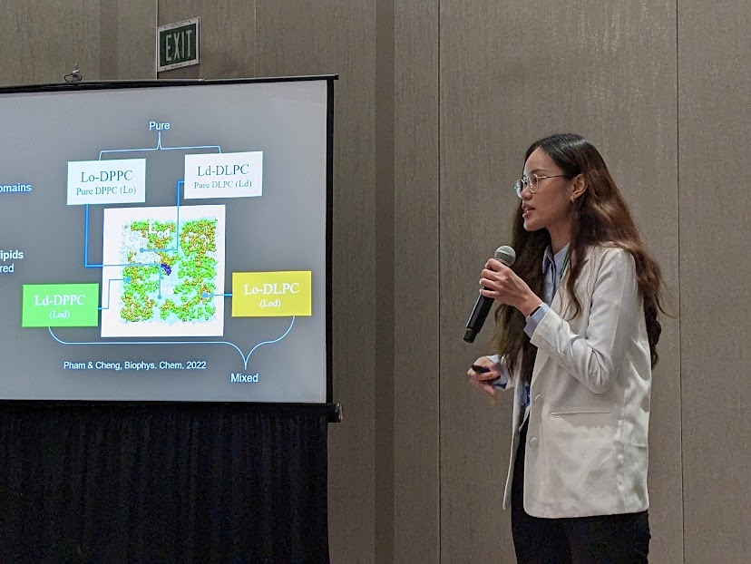
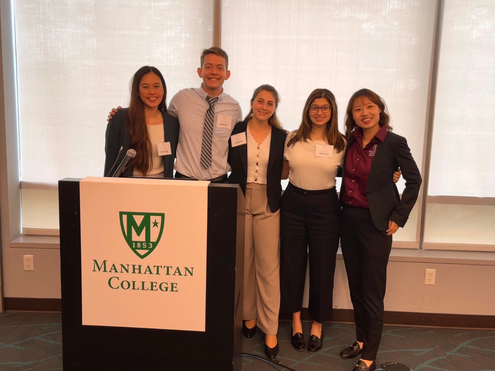
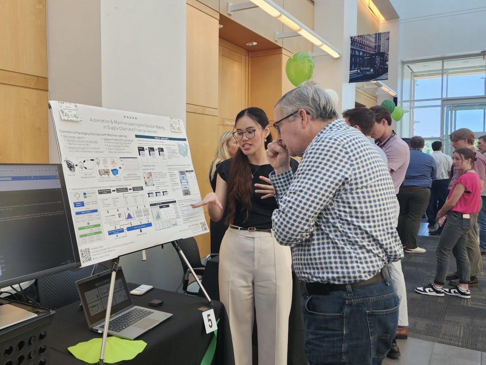
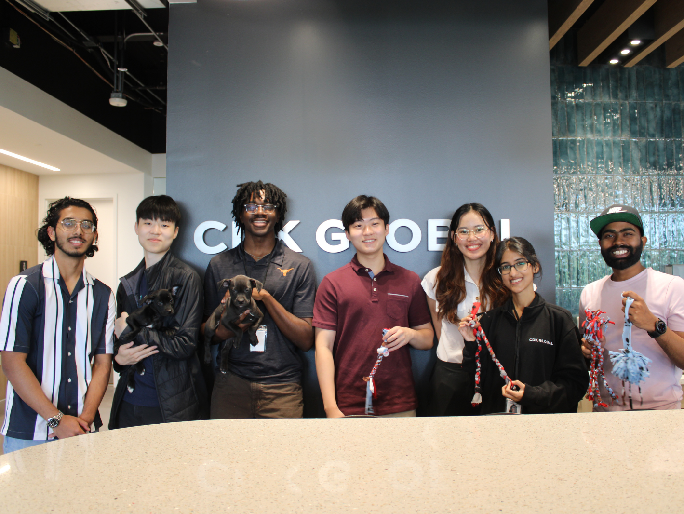

About me
Career Objectives
Hi there, I’m Nora (Ngoc) Nguyen, a Project Manager at Applied Materials, a leading semiconductor manufacturing company. I specialize in workflow automation, business intelligence, and supply-chain process optimization. In my current role within Global Services, I lead high‑impact programs that streamline reverse value chain operations, modernize legacy workflows, and strengthen decision‑making across the organization.
My work centers on turning ambiguous business needs into scalable technical and analytics solutions. Whether I’m architecting multi‑team operational workflows, designing dashboards that improve visibility for leaders, or driving automation initiatives that eliminate bottlenecks and reduce cycle time, I focus on building systems that help teams work smarter and operate with confidence.
Before stepping into this role, I built a strong foundation in data analytics, machine learning, and software development within the automative, SaaS and biomedical domains through experiences at Volvo Group, CDK Global, and Trinity University’s Neuroscience Lab. This background has shaped how I approach product and process improvement today, by combining analytical rigor, operational depth, and user‑centric design to create solutions that are sustainable, thoughtful, and help teams work smarter.

APS Conference 2023, Las Vegas, NV
Business Analytics Competition & Conference 2023 at Manhattan College, New York, NY
Volvo office 2024, Greensboro, NC
CDK Global office 2023, Austin, TXMore details about my work and projects can be found in the Resume & Portfolio tabs.
Hobbies
Photography
I love experimenting with my camera when I’m traveling or out in nature. I’m far from a professional. I do it purely for fun. But capturing landscapes, small moments, and the feeling of a place helps me preserve memories from my trips.
 Terrace Fields, Sapa, Vietnam
Terrace Fields, Sapa, Vietnam
 Summer drizzle, Sapa, Vietnam
Summer drizzle, Sapa, Vietnam
Website last update: Jan 07, 2025